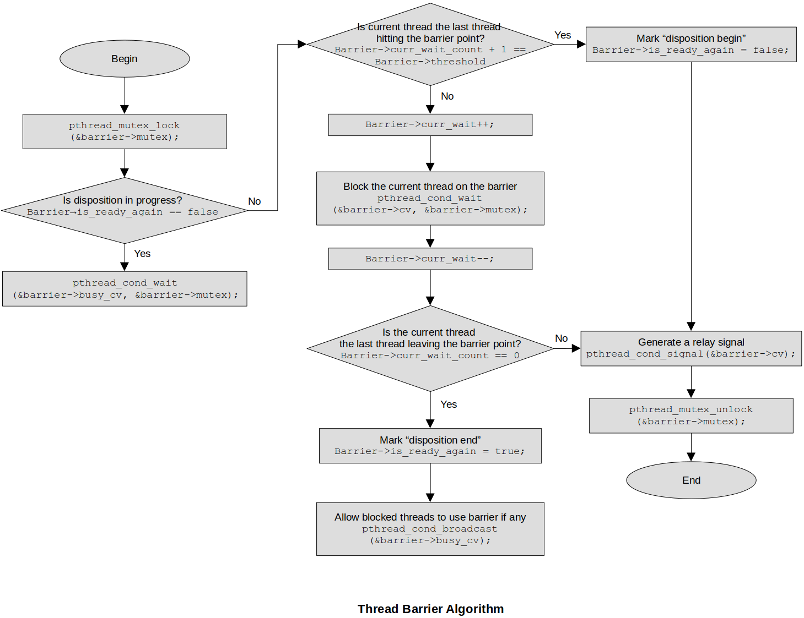

Home | Projects | Notes > Multi-Threading (POSIX Threads) > Thread Synchronization - Thread Barrier
Thread Synchronization - Thread Barrier
Introduction to Thread Barrier
Thread Barrier is a thread synchronization data structure which blocks all threads at a particular line of code until some specified number of threads arrives at the barrier point.
In case where you must wait for a number of tasks to be completed before an overall task can proceed, barrier synchronization can be used.
Practical use case:
Internet Download Manager (IDM) is an application that downloads the big files through multiple downloader threads. Each downloader thread downloads a section of a file independently, and concurrently (or in parallel depending on the number of available CPUs). When all threads complete, the application reports "file download success".
Functionality of Thread Barrier
Every thread barrier has to be initialized with an integer value; i.e., barrier threshold. If the barrier threshold is set to
POSIX API provides a built-in support to work with thread barriers (
pthread_barrier_t).
Implementing Thread Barrier Data Structure
Thread barrier works on the concept of relay:
A thread which is just signaled (meaning that the thread has just resumed its execution from the blocked state) will signal other blocked threads to resume execution, and thereby creating a chain of signals. (It just just like when we get stuck at a barricade, we pass the barricade when allowed by the authority.)

Interface for thread barrier data structure:
xxxxxxxxxx321/*2* File Name : thread_barrier.h3* Description : Interface for thread barrier data structure4* Author : Modified by by Kyungjae Lee (Original: Abhishek Sagar)5* Date Created : 01/11/20236*/789101112131415typedef struct th_barrier_16{17uint32_t threshold_count; /* threshold */18uint32_t curr_wait_count; /* current # of threads waiting at the barrier [0, threshold - 1]*/19pthread_cond_t cv; /* condition variable (necessary for threads to be blocked) */20pthread_mutex_t mutex; /* to gurantee mutual exclusion for operations on barrier DS */21bool is_ready_again; /* true (deault), false (disposition in progress), true (disp. end) */22pthread_cond_t busy_cv; /* condition variable to block any additional threads arrive at the23barrier while disposition is in progress */24} th_barrier_t;2526/* interface */27void thread_barrier_init(th_barrier_t *barrier, uint32_t threshold_count);28void thread_barrier_wait(th_barrier_t *barrier);29void thread_barrier_destroy(th_barrier_t *barrier);30void thread_barrier_print(th_barrier_t *th_barrier);3132Implementation of thread barrier data structure:
xxxxxxxxxx741/*2* File Name : thread_barrier.c3* Description : Implementation of thread barrier data structure4* Author : Modified by by Kyungjae Lee (Original: Abhishek Sagar)5* Date Created : 01/11/20236*/789101112void thread_barrier_init (th_barrier_t *barrier, uint32_t threshold_count)13{14barrier->threshold_count = threshold_count;15barrier->curr_wait_count = 0;16pthread_cond_init(&barrier->cv, NULL);17pthread_mutex_init(&barrier->mutex, NULL);18barrier->is_ready_again = true;19pthread_cond_init(&barrier->busy_cv, NULL);20}2122void thread_barrier_wait (th_barrier_t *barrier)23{24pthread_mutex_lock (&barrier->mutex);2526/* do not allow threads to access the barrier when the barrier disposition is in progress */27while (barrier->is_ready_again == false) /* 'while' instead of 'if' to avoid spurious wakeup */28{29pthread_cond_wait(&barrier->busy_cv, &barrier->mutex);30}3132/* if the current thread is the last thread to hit the barrier point */33if (barrier->curr_wait_count + 1 == barrier->threshold_count)34{35/* signal a blocked thread, pass through the barrier by unlocking the mutex */36/* mark "disposition begin" */37barrier->is_ready_again = false;38pthread_cond_signal(&barrier->cv);39pthread_mutex_unlock (&barrier->mutex);40return;41}4243/* if the current thread is NOT the last thread to hit the barrier point */44barrier->curr_wait_count++;45/* block the current thread on the barrier */46pthread_cond_wait(&barrier->cv, &barrier->mutex);47/* when a blocked thread resumes its execution and signals the condition variable */48barrier->curr_wait_count--;4950/* if the current thread is the last thread to leave the barrier point */51if (barrier->curr_wait_count == 0)52{53/* do not need to signal the condition variable since there are no more threads left blocking */54/* mark "disposition end" */55barrier->is_ready_again = true;56/* allow blocked thread (arrived during 'disposition in progress' state) to use barrier if any */57pthread_cond_broadcast(&barrier->busy_cv);58}59/* if the current thread is NOT the last thread to leave the barrier point */60else61{62/* signal the condition variable for a thread that is left blocking on the barrier point */63pthread_cond_signal(&barrier->cv);64}6566pthread_mutex_unlock (&barrier->mutex);67}6869void thread_barrier_print(th_barrier_t *th_barrier)70{71printf("th_barrier->threshold_count = %u\n", th_barrier->threshold_count);72printf("th_barrier->curr_wait_count = %u\n", th_barrier->curr_wait_count);73printf("th_barrier->is_ready_again = %s\n", th_barrier->is_ready_again ? "true" : "false");74}

Test driver for thread barrier data structure:
xxxxxxxxxx501/*2* File Name : thread_barrier_main.c3* Description : Test driver for thread barrier data structure4* Author : Modified by by Kyungjae Lee (Original: Abhishek Sagar)5* Date Created : 01/11/20236*/7891011static th_barrier_t th_barrier;12static pthread_t pthreads[3];1314void* thread_fn_callback (void *arg)15{16thread_barrier_wait(&th_barrier);17printf("1st barricade cleared by thread %s\n", (char *)arg);1819thread_barrier_wait(&th_barrier);20printf("2nd barricade cleared by thread %s\n", (char *)arg);2122thread_barrier_wait(&th_barrier);23printf("3rd barricade cleared by thread %s\n", (char *)arg);2425pthread_exit(0);26return NULL;27}2829int main(int argc, char *argv[])30{31thread_barrier_init(&th_barrier, 3);3233/* create joinable threads since we don't want the application to terminate before threads do */34static const char *th1 = "th1";35pthread_create(&pthreads[0], NULL, thread_fn_callback, (void *)th1);3637static const char *th2 = "th2";38pthread_create(&pthreads[1], NULL, thread_fn_callback, (void *)th2);3940static const char *th3 = "th3";41pthread_create(&pthreads[2], NULL, thread_fn_callback, (void *)th3);4243pthread_join(pthreads[0], NULL);44pthread_join(pthreads[1], NULL);45pthread_join(pthreads[2], NULL);4647/* to test if the barrier is left in a correct state before the application terminates */48thread_barrier_print(&th_barrier);49return 0;50}xxxxxxxxxx1211st barricade cleared by thread th321st barricade cleared by thread th231st barricade cleared by thread th142nd barricade cleared by thread th152nd barricade cleared by thread th362nd barricade cleared by thread th273rd barricade cleared by thread th183rd barricade cleared by thread th393rd barricade cleared by thread th210th_barrier->threshold_count = 311th_barrier->curr_wait_count = 012th_barrier->is_ready_again = trueWhat matters is if all three threads appear at each of the three barricade clearances. The order in which they appear does not matter!
My test results show, though, 1st barricade is always cleared by the thread
th3. Think why!
References
Sagar, A. (2022). Part A - Multithreading & Thread Synchronization - Pthreads [Video file]. Retrieved from https://www.udemy.com/course/multithreading_parta/